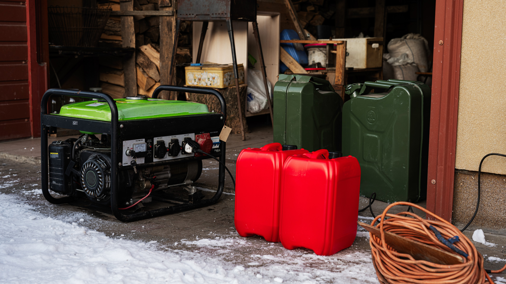

Diesel Dynamics
Invisible Smoke
Diesel generators don't just make noise; they release chemicals that stay in the air at the exact height where children breathe.
Developed by Engr. Azhan Ahmed
When the grid fails, thousands of diesel generators turn on. These engines release CO₂ and tiny dust (PM2.5) that stay in our streets and enter our lungs.
Concrete traps heat. This is why a street in Karachi feels 5°C hotter than a garden nearby.
Using Solar to stop smoke and Trees to clean the air to reach "Net Zero"—a city that no longer adds poison to the atmosphere.
Diesel generators don't just make noise; they release chemicals that stay in the air at the exact height where children breathe.

We use dirty diesel because our power grid isn't strong enough. This "gap" is what we are trying to fill with clean solar energy.
Every solar panel installed is like removing a small car from the road. It stops pollution before it even starts.

A single mature tree cleans as much air as a high-tech machine but does it for free, year after year.

Trees release moisture into the air. This "evapotranspiration" acts like a natural air conditioner for your neighborhood.
Our finish line: where the air we clean (with trees) is equal to the smoke we stop (with solar).